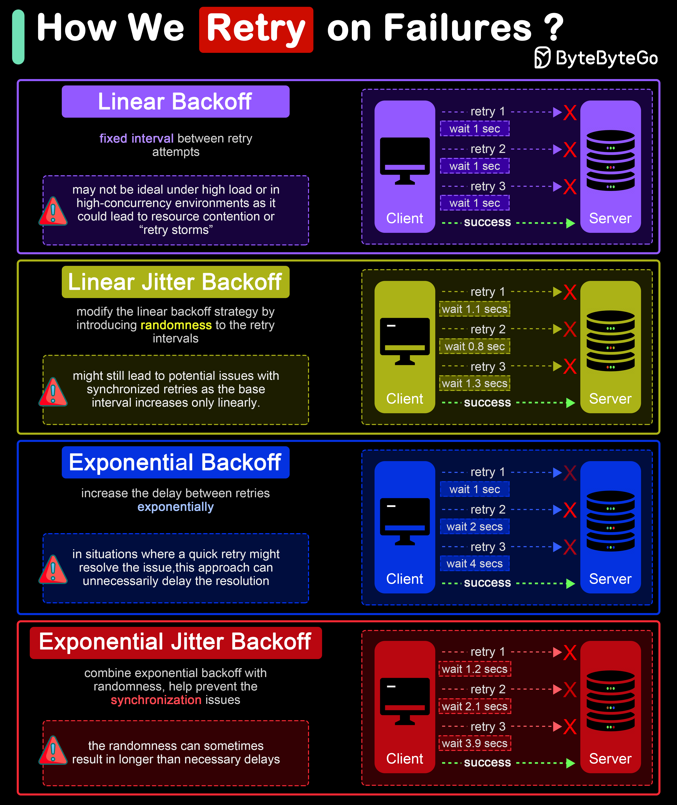

In distributed systems and networked applications, retry strategies are crucial for handling transient errors and network instability effectively. The diagram shows 4 common retry strategies.
Linear backoff involves waiting for a progressively increasing fixed interval between retry attempts.
Advantages: Simple to implement and understand.
Disadvantages: May not be ideal under high load or in high-concurrency environments as it could lead to resource contention or “retry storms”.
Linear jitter backoff modifies the linear backoff strategy by introducing randomness to the retry intervals. This strategy still increases the delay linearly but adds a random “jitter” to each interval.
Advantages: The randomness helps spread out the retry attempts over time, reducing the chance of synchronized retries across instances.
Disadvantages: Although better than simple linear backoff, this strategy might still lead to potential issues with synchronized retries as the base interval increases only linearly.
Exponential backoff involves increasing the delay between retries exponentially. The interval might start at 1 second, then increase to 2 seconds, 4 seconds, 8 seconds, and so on, typically up to a maximum delay. This approach is more aggressive in spacing out retries than linear backoff.
Advantages: Significantly reduces the load on the system and the likelihood of collision or overlap in retry attempts, making it suitable for high-load environments.
Disadvantages: In situations where a quick retry might resolve the issue, this approach can unnecessarily delay the resolution.
Exponential jitter backoff combines exponential backoff with randomness. After each retry, the backoff interval is exponentially increased, and then a random jitter is applied. The jitter can be either additive (adding a random amount to the exponential delay) or multiplicative (multiplying the exponential delay by a random factor).
Advantages: Offers all the benefits of exponential backoff, with the added advantage of reducing retry collisions even further due to the introduction of jitter.
Disadvantages: The randomness can sometimes result in longer than necessary delays, especially if the jitter is significant.